☞☞☞ 畅游南极净化之旅 ☜☜☜
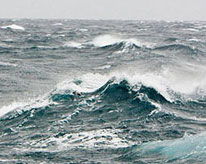
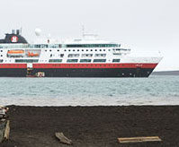
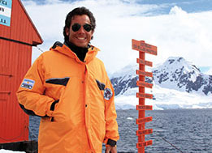
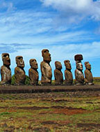
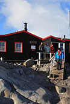
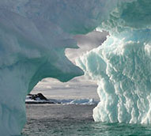
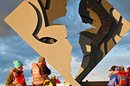
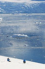
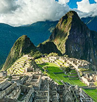
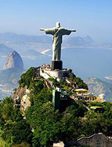
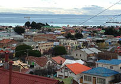
×
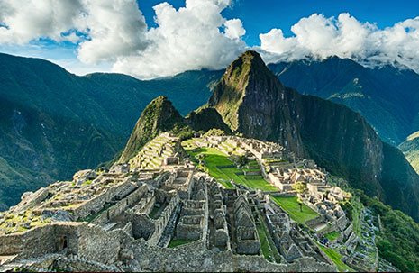
马丘比丘
马丘比丘在克丘亚语（Quechua）中为“古老的山”之义，也被称作“失落的印加城市”，是保存完好的前哥伦布时期的印加遗迹。马丘比丘是南美洲最重要的考古发掘中心，也因此是秘鲁非常受欢迎的旅游景点。
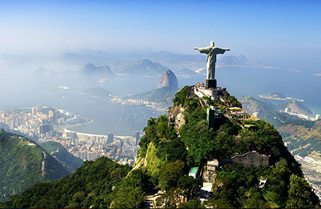
耶稣山
位于巴西里约热内卢市内的耶稣山（又名驼背山），山丘位于海拔2310尺，山高709米，是观光里约热内卢的理想地方，山丘上有一巨型耶稣基督像，为里约象征。
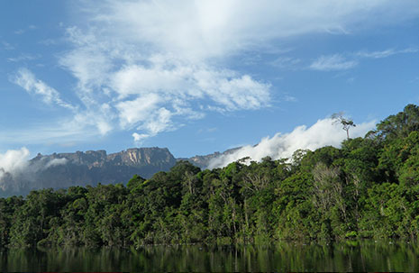
玛瑙斯
玛瑙斯市为巴西亚马逊州首府，是巴西人口第八多城市。玛瑙斯被称为“亚马逊心脏”“森林之城”。主要景点有海关大楼（砖瓦均从英国进口）、马瑙斯大剧院、印第安人博物馆等。
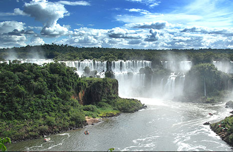
伊瓜苏大瀑布
伊瓜苏大瀑布是世界上最宽的瀑布，位于阿根廷与巴西边界上伊瓜苏河与巴拉那河合流点上游23千米处，为马蹄形瀑布，高82米，宽4千米，平均落差75米。1984年，被联合国教科文组织列为世界自然遗产。
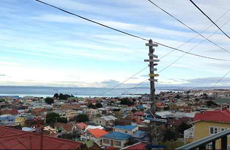
蓬塔阿雷纳斯
蓬塔阿雷纳斯（世界最南城市（南纬53°10′）之一，智利南极区和麦哲伦省首府。水、陆交通方便，并建有国际机场，也是从南美洲出发的南极探险者们进行休整的最后一站。
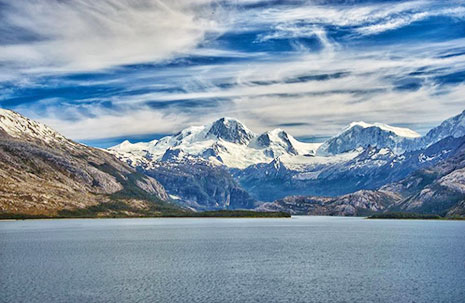
智利峡湾
智利峡湾位于智利西南部，与世隔绝，少为人知。这也是南极邮轮旅游智利段非常精彩的一段，如果来南极旅游没有看到智利峡湾，那将是一个非常大的遗憾。
▲
▼